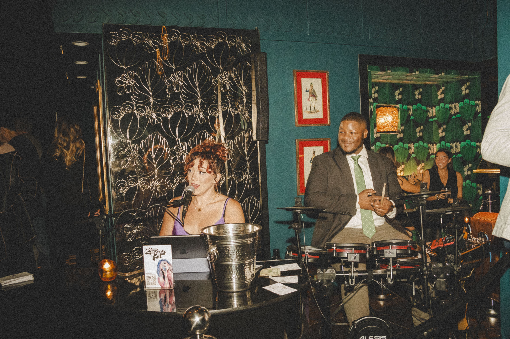

Certifications
- CompTIA Security+Sept 2025
- Fortinet NSE 1 - Network Security Associate 2022
- IBM SkillsBuild: Data Fundamentals 2023
- Meta Front-End Development In Progress, 2023

Cybersecurity & GRC Analyst
Security+ Certified i.c.stars Cycle 60 Computer Science — Cybersecurity
Page 02 / Professional Record
Andrew Thomas
Cybersecurity & GRC Analyst (Entry-Level)
IT professional with 5+ years of experience spanning network security, technical education, and program compliance. CompTIA Security+ certified, with Fortinet NSE 1 certification; completing an Associate of Science in Computer Science with a concentration in cybersecurity (2026) and currently interning with i.c.stars (Cycle 60), consulting on a client technology project. Experienced in documenting compliance with government and institutional standards, monitoring systems and program data, and translating technical risk for non-technical stakeholders. Seeking an entry-level GRC or cybersecurity analyst role.
Certifications
Skills
Tools
FortiGate, Wireshark, Packet Tracer, Microsoft 365, Salesforce, Slack, Google Workspace, Excel, PowerPoint, Word, Canva, Zoom
Experience
Chicago, IL | Aug 2026 - Dec 2026 (Cycle 60)
Chicago, IL | Nov 2018 - Aug 2026
Chicago, IL | Mar 2021 - Aug 2023
Chicago, IL | Jan 2021 - Sept 2023
Chicago, IL | Nov 2015 - 2018
Chicago, IL | Nov 2015 - Dec 2017
Education
Concentration in Cybersecurity
City Colleges of Chicago
In Progress, expected 2026
Page 03 / Core Capabilities
FortiGate, Wireshark, Packet Tracer, Microsoft 365, Salesforce, Slack, Google Workspace, Excel, PowerPoint, Word, Canva, Zoom
Program Journey / Leadership
I connect people, priorities, and technical work. In team environments, I help turn many perspectives into one accountable direction.
My leadership style is grounded in communication, delegation, follow-through, and making space for every contributor to do strong work.
From program management to client consulting, I keep teams focused on the outcome, the audience, and the next decision.
Tea Host
I hosted Yemi Akisanya, Axon's People & Culture leader, for a high tea conversation about global employee experience, JEDI, learning, philanthropy, and the systems that help people thrive. What stayed with me was Axon's mission to reduce gun-related deaths by giving communities a non-lethal option. It reinforced a principle I bring to security and GRC: protect the people a system touches, then build the culture and evidence to prove it.
Tea Debriefs
"Perseverance, grit, resilience, and determination."JV
"Am I going to be Pat, or am I going to be JV?"JV
"Make the world better today."Marc D.
"Learn, master, teach."Kevin Gates
"Presence, passion, skills."Kevin Gates
"An L is nothing but a lesson."Kevin Gates
Six quotes, four people, one thread: decide who you are before the room decides for you.
At Greater New St James, I lead three choirs directly: Men's, Young Adult, and Combined. Each week I select the music, prepare lyrics and reference recordings, and send a message that sets the tone before Sunday. This is leadership through preparation: creating alignment, readiness, and purpose before anyone sees me step forward.
Program Journey / Business Acumen
I bring an operations mindset to technology: understand the business problem, document the risk, and recommend a path people can actually use.
My experience spans stakeholder engagement, grant compliance, budgeting, resource allocation, and presenting technical direction to non-technical audiences.
I measure strong work by whether it is clear, defensible, practical, and aligned to the organization it serves.
Program Journey / Career Direction
I am pursuing entry-level GRC and cybersecurity analyst roles where I can apply security fundamentals, documentation discipline, and operational judgment.
I am completing my Associate of Science in Computer Science with a concentration in cybersecurity and continuing to grow through hands-on client work.
My development path includes deeper analyst experience, CySA+ preparation, and eventually the ISC2 CGRC credential.
Program Journey / Sustainable Growth
Sustainable performance starts with making room for reflection, relationships, creativity, and recovery alongside the work.
Music, ministry, and time away from the screen help me return to technical challenges with focus and perspective.
I want a career that is ambitious and durable: one that protects my energy while giving my skills room to compound.
Page 02 / The Profile
I didn't come into tech through a straight line - I came into it through people. For the last several years I've managed technology-driven programs for kids and families across Chicago: running digital learning access for 100+ students at a YMCA partner school, coordinating compliance documentation for grant-funded public health programs, and teaching cybersecurity, robotics, and AI directly to students through NextWave STEM. Before that, I was the person who kept audio, video, and lighting gear running at Guitar Center, and before that, the person scanning and tracking packages through a FedEx distribution center. Every one of those jobs had the same thread running through it, even when I didn't have a name for it yet: protect the data, document what happened, make sure the systems people depend on actually work.
Eventually I stopped treating that as a coincidence and started treating it as a direction. I got certified in CompTIA Security+ and Fortinet NSE 1, enrolled in an Associate of Science in Computer Science with a concentration in cybersecurity, and started looking specifically at governance, risk, and compliance - because that's the part of security that matches how I already think: not just "is the system secure," but "can we prove it, explain it, and keep it that way."
Right now I'm in Cycle 60 at i.c.stars, an intensive Chicago technology internship that pairs hands-on coding and technical training with real client work. My cohort is consulting on a confidential client engagement, which means I'm applying what I'm learning to an actual business environment rather than a classroom exercise - the difference between studying security and practicing it. Alongside the internship, I'm finishing my AS in Computer Science and working toward the ISC2 Certified in Cybersecurity credential, so this stretch of the year is deliberately dense: coursework, client deliverables, and certification study running in parallel.
Cycle 60 wraps December 4th, and I'm using it as a launch point, not a finish line. My near-term plan is to finish my AS degree, add CompTIA CySA+ once I'm working in an analyst seat, and eventually pursue the ISC2 CGRC - the credential that most directly matches where I want to end up. I'm targeting entry-level GRC and cybersecurity analyst roles in Chicago, particularly at organizations in healthcare, financial services, and logistics, where the compliance and documentation instincts I built managing grant-funded programs are as valuable as the technical skills I'm building now. Longer term, I want to be the kind of analyst who can sit in a room with both engineers and executives and translate for both - that's the gap I've been closing my whole career without knowing it had a job title.
Page 03 / The Personal Edition
A closer look at the interests, sounds, and people that make up my world beyond the work.
Life Outside The Terminal
When I am away from a screen, I make room for the things that keep me curious, creative, and connected. Hobbies are where I recharge and find new ideas to bring back to my work.
The Soundtrack
Music is part of the daily rhythm. I enjoy discovering different sounds, revisiting favorite artists, and letting a good playlist set the tone for the moment.
“Every good day needs a soundtrack.”
The Home Desk
Family is part of the foundation behind every goal. Their support, perspective, and encouragement keep the big picture in view while I continue building what comes next.
Together is always worth celebrating.
Page 04 / Rhythm & Repertoire
A visual showcase of my work behind the kit.



Ministry in Motion
Raised in worship, I began with percussion, drums, choir, and musical direction. Today I serve as Minister of Music at Greater New St James, leading worship while running sound and AV.
Stage Credits
Performed with Sonic Healing, The Cosmic Jaywalkers, Mimi on the Mic, Jade the Ivy, Lauren Hall, and artists across the city.
"Bring the pocket. Elevate the room."
Explore The Cosmic JaywalkersPage 02 / Selected Work
Role: Team Lead / Full Stack Contributor & Client Bridge — All Stars Associates (i.c.stars Cycle 60)
Led the client-facing translation of a confidential healthcare-sector RFP into a technical solution proposal as part of a five-person consulting team. Built hands-on across the full stack under a collective ownership model while helping shape a secure, scalable concept aligned to the client's operational goals.
After hours
Ready to make some noise.
0 hits powered up